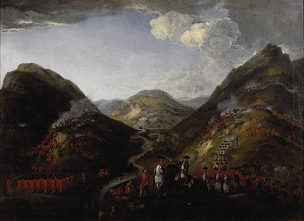
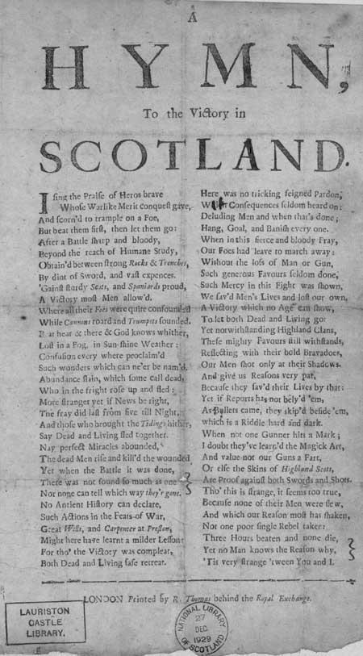

Hymn to the Victory in Scotland
The Events of 1819
A Broadside Ballad
Tune
(Unknown, replaced here by "Crookie Den"
Sequenced by Christian Souchon)

The Battle of Glenshiel 1719. Figures probably
include Lord George Murray, Rob Roy McGregor and General Wightman
(National Galleries of Scotland)

|
1. I sing the praise of heroes brave
Whose warlike merit conquest gave, And scorned to trample on a foe, But beat them first, then let them go. After a battle sharp and bloody, Beyond the reach of human study, Obtained between strong rocks and trenches, By dint of sword, and vast expenses, 'Gainst sturdy Scots and Spaniards proud, A victory most men allowed. 'Gainst sturdy Scots and Spaniards proud, A victory most men allowed. 2. Where all their foes were quite confounded While cannons roared and trumpets sounded. Beat here and there and God knows whither, Lost in a fog, in sunshine weather. Confusion everywhere proclaimed Such wonders which can ne'er be named. Abundance slain, which some call dead, Who in the fright rose up and fled. More stranger yet if news be right, The fray did last from five till night. And those who brought the tidings hither, Say dead and living fled together. 3. Nay perfect miracles abounded, The dead men rise and killed the wounded Yet when the battle it was done, There was not found so much as one Nor none can tell which way they're gone. No ancient history can declare, Such actions in the feats-of War. Great Wills and Carpenter at Preston Might here have learnt a milder lesson: For though the Victory was complete, Both dead and living safe retreat. Both dead and living safe retreat. 4. Here was no tricking feigned pardon With consequences seldom heard on: Deluding men and when that's done; Hang, goal, and banish every one. When in this fierce and bloody fray, Our foes had leave to march away: Without the loss of man or gun, Such generous favours seldom done. -Such mercy in this fight was shown, We saved men's lives and lost our own. A victory which no age can show To let both dead and living go. 5. Yet notwithstanding Highland Clans, These mighty favours still withstand, Reflecting with their bold bravadoes, Our men shot only at their shadows. And give us reasons very pat, Because they saved their lives by that: Yet if reports has not belied 'em, As bullets came, they skipped beside 'em, Which is a riddle hard and dark. When not one gunner hits a mark; Which is a riddle hard and dark. When not one gunner hits a mark; 6. I doubt they've learned the magic art, And value not our guns a fart, Or else the skins of Highland Scots, Are proof against both swords and shots. Though this is strange, it seems too true, Because none of their men were flown, And which our reason most has shaken, Nor one poor single rebel taken Three hours beaten and none die, Yet no man knows the reason why, 'Tis very strange 'tween you and I. 'Tis very strange 'tween you and I. LONDON Printed by R.Thomas behind the Royal Exchange |

National Library of Scotland : Broadside Collection
1. Je tresse aux héros des lauriers
|
Qui par leur valeur triomphèrent. Et qui pourtant ont répugné A frapper l'adversaire à terre. Il l'ont laissé, chose étonnante, Repartir après la mêlée Acharnée, quand l'épée sanglante Parmi les talus, les rochers Sur l'Espagnol et l'Ecossais Leur eut accordé la victoire. Sur l'Espagnol et l'Ecossais Leur eut accordé la victoire. 2. L'ennemi fut saisi d'effroi Par les clairons, la canonnade Tonnant de partout à la fois, Tandis que le soleil s'évade Sous la fumée. La peur alors Opère d'étonnants miracles. Beaucoup de ceux qu'on croyait morts Se lèvent et fuient la débâcle. Plus étonnant: ils combattirent De cinq heures jusqu'à la nuit. Et ceux qui nous l'apprirent virent Des vivants et des morts qui fuient. 3. Oui, les miracles abondèrent: Les morts achèvent les blessés. Mais quand vint la fin de l'affaire, Pas un seul mort ne fut trouvé. Où sont-ils allés? Nul ne sait. Quelle nation dans son histoire Peut se targuer de tels hauts-faits? Wills, Carpenter , ivres de gloire, 4. Apprennez donc l'humilité! Malgré leur cuisante défaite Vivants et morts firent retraite. Vivants et morts firent retraite. Pas de ruse, ni feint pardon Dont les suites restent dans l'ombre: Quand on trompe les gens, puis on Pend ou déporte tout le monde. Si dans ce féroce combat Notre adversaire a fait retraite Sans perdre canon, ni soldat, Cette faveur est bien suspecte. -Notre noblesse alla jusqu'à Sauver leurs vies au prix des nôtres. Mais jamais vainqueur ne laissa Les morts libres comme les autres. 5. N'en déplaise aux clans des Highlands, Lesquels nient notre grandeur d'âme, Affirmant que, dans leurs péans, C'est les ombres que nous visâmes. Ils nous donnent, en cela, raison: S'ils échappèrent aux rafales, C'est, si l'on en croit ce que l'on Dit, qu'ils ont esquivé nos balles. Mais qui ne trouverait pas louche Qu'aucun d'entre nous n'ait fait mouche? Mais qui ne trouverait pas louche Qu'aucun d'entre nous n'ait fait mouche? 6. Je doute qu'ils soient des suppôts De Satan narguant la mitraille. Ou bien alors, c'est que leurs peaux Résistent aux fers et aux balles. C'est étrange, mais c'est ainsi, Puisque aucun d'eux n'a pris la fuite Et que, croyez-vous, on n'ait pris, Un seul rebelle par la suite: Trois heures de combat sans mort, Pour un motif que l'on ignore, Hum! Voilà qui m'étonne fort! Hum! Voilà qui m'étonne fort! LONDRES Imprimé chez R.Thomas derrière la Bourse de Commerce (Trad. Ch.Souchon (c) 2006) |

|
"1719 saw what is known as the "little Rising". The only battle of this Rising occurred between a government army led by General Wightman and Jacobites under the 10th Earl Marischal at Glenshiel.
The Jacobite cause was supported occasionally by Spain. Cardinal Alberoni on behalf of Philip V of Spain sent five thousand men to aid the new Rising. The news of this generated great enthusiasm until a sea journey through terrible weather saw only around three hundred Spaniards reach Scotland at Kintail, which made many potential recruits withhold. Less than a thousand men assembled to be led by John Cameron of Lochiel, 18th Chief of Clan Cameron, Lord George Murray and the Earl of Seaforth. Eilean Donan Castle became their supply base while they headed off for Inverness through the Great Glen. The Hanovarians were aware of their moves and attacked Eilean Donan Castle from the sea, destroying it with the cannon fire of three warships. General Wightman came from Inverness and confronted the Jacobites at Glenshiel on the 10th of June. The forces were well matched and the battle continued for hours with no clear victor. When expected Jacobite support from the Lowlanders was minimal, spirits fell completely. The Rising was abandoned and the Jacobites headed for their homes. The Spaniards surrendered to Wightman and were eventually sent home after a period of imprisonment. Lochiel, after skulking for a time in the Highlands, made his way back to exile in France. " (Sources: www.scotsclans.com/history & www.clan-cameron.org) This ballad mocks the Jacobite army's claims that they escaped with no casualties, even though the battle raged for hours, and exalts the government forces for showing mercy. " |
"Cette ballade fut écrite après le 'petit soulèvement' au cours duquel une armée de Jacobites commandée par le 10ème Comte Marischal fut défaite à Glenshiel, en 1719, par les troupes hanovriennes sous les ordre du Général Wightman.
La cause Jacobite fut soutenue occasionnellement par l'Espagne. Le Cardinal Alberoni sur la demande de Philippe V d'Espagne envoya cinq mille hommes soutenir le nouveau soulèvement. Cette nouvelle souleva l'enthousiasme jusqu'à ce qu'une tempête ne permette qu'à trois cents Espagnols d'atteindre l'Ecosse à Kintail, ce qui conduit plus d'une recrue potentielle à s'abstenir. Moins de mille hommes se réunirent sous le commandement de John Cameron de Lochiel, 18ème chef du Clan, Lord George Murray et le Comte de Seaforth. Le château d'Eileann Donan était leur base logistique d'où ils se dirigèrent vers Inverness en suivant le Grand Glen. Les Hanovriens instruits de leurs mouvements, attaquèrent Eileann Donan par la mer et le détruisirent avec les canons de leurs trois vaisseaux. Le Général Wightman arrivant d'Inverness affronta les Jacobites à Glenshiel le 10 juin 1719. Les forces en présence étant équivalentes, la bataille dura des heures sans résultat décisif. Voyant que les Lowlands ne leur apportaient pas le soutien escompté, les Jacobites furent démoralisés. Le soulèvement tourna court et ils rentrèrent chez eux. Quant aux Espagnols ils durent se rendre à Wightman et furent renvoyés chez eux après avoir séjourné en prison un certain temps. Lochiel après avoir ruminé son dépit quitta les Highlands pour retourner en exil en France." Sources: www.scotsclans.com/history & www.clan-cameron.org) La ballade raille l'armée Jacobite qui prétendait avoir battu retraite sans pertes, même après une bataille acharnée qui dura des heures et félicite l'armée royale de sa magnanimité." |